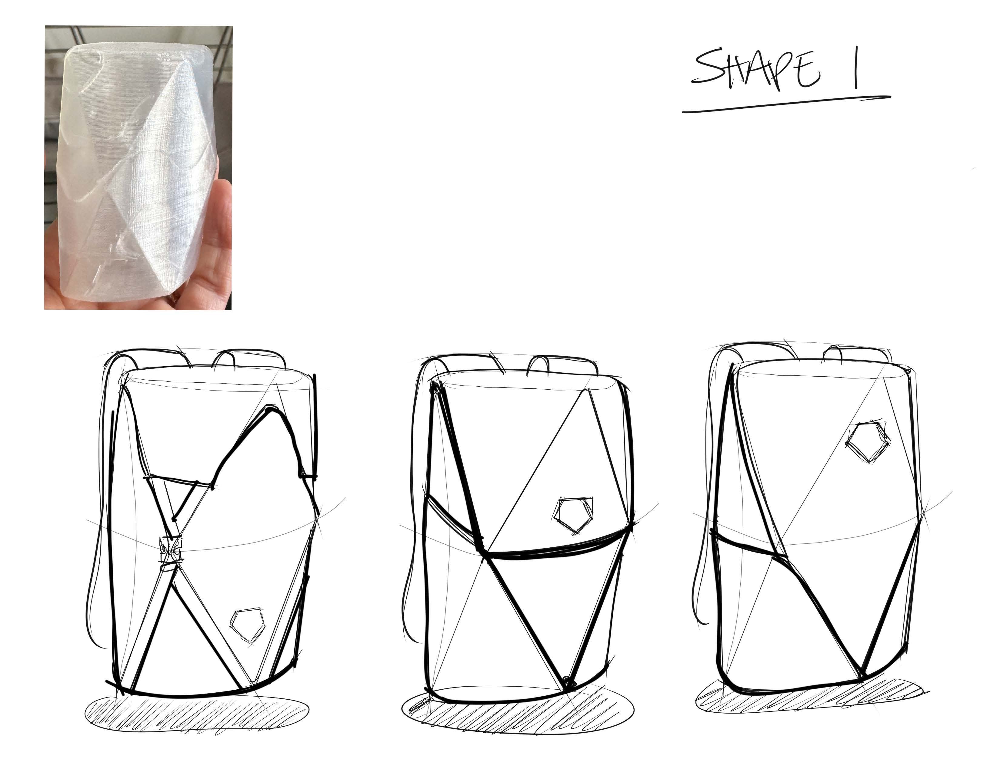
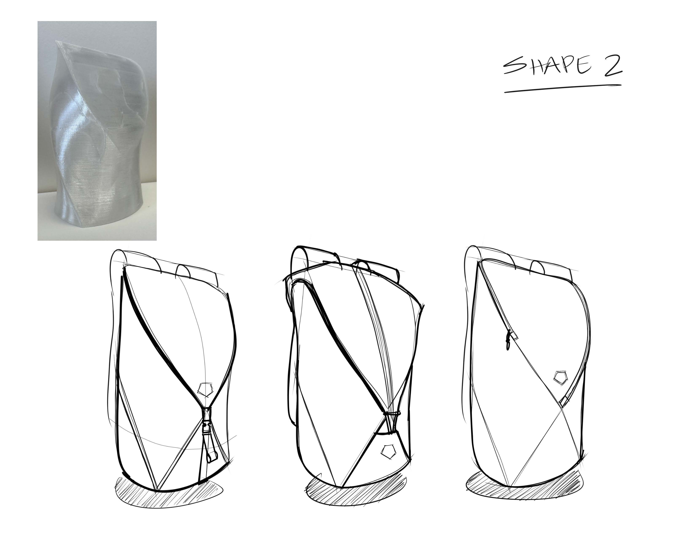
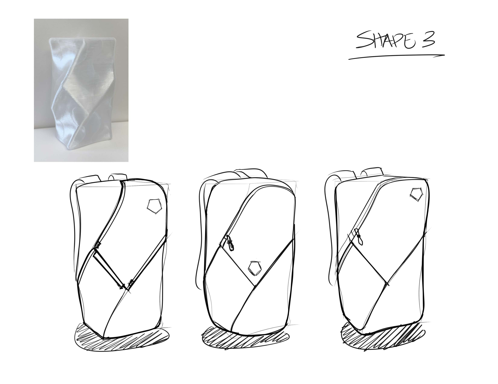
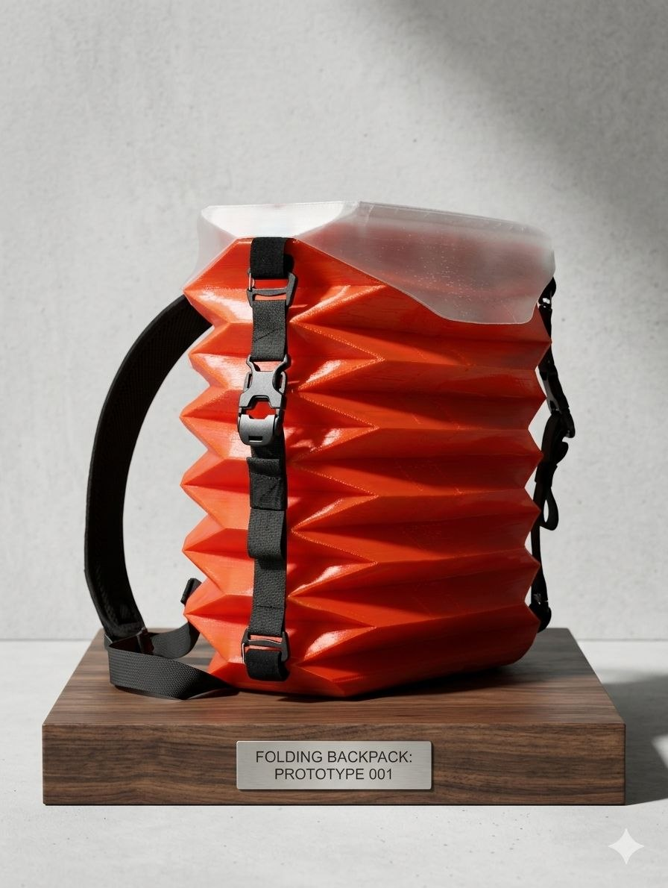
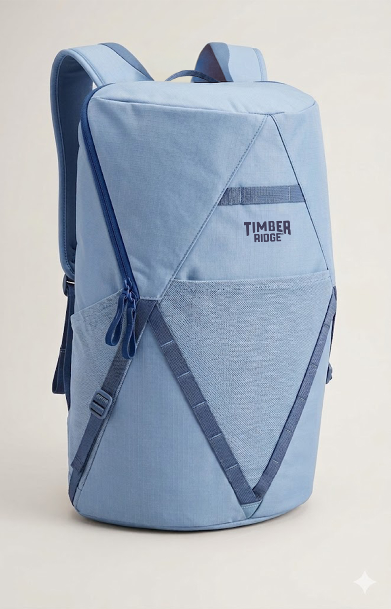
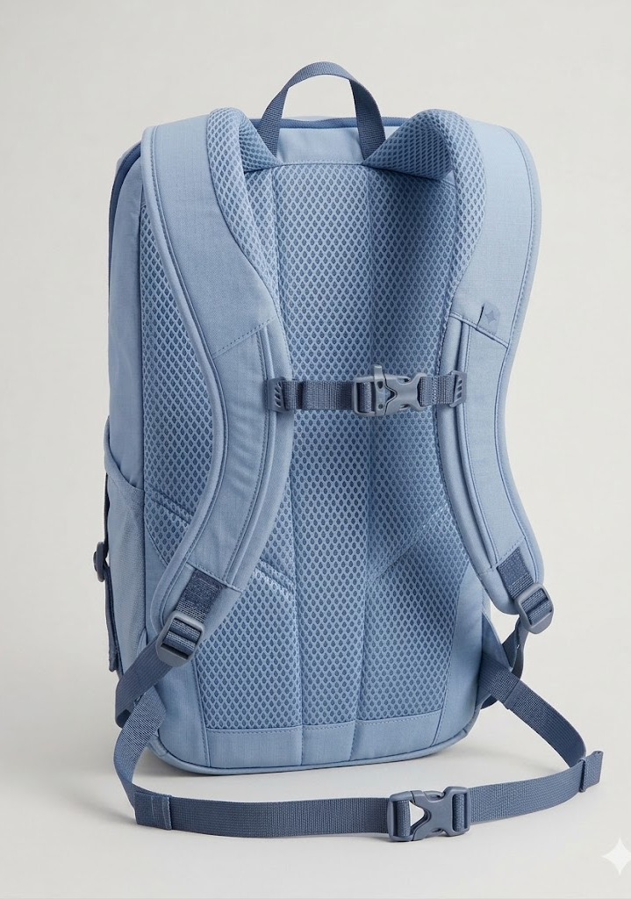
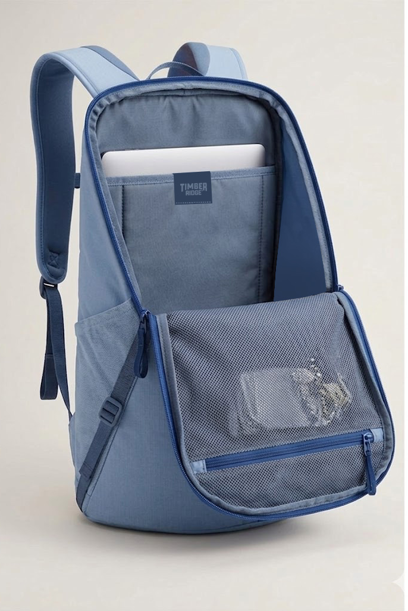

This version uses real extracted source images from the sketch and spec PDFs, plus the provided red compression-pack image as the compression reference.
Deck structure: Shape 1, Shape 2, Shape 3, compression precedent, and a brief-aligned direction check.





The current front view is already cleaner and more productized than the earlier sketch options.

The back panel and shoulder system are aligned with a practical daypack target.

The panel-load opening stays the clearest functional story in the current brief.
Simple take: Shape 1 has the strongest graphic identity, Shape 2 is the softest transition, and Shape 3 is the cleanest product path. If this needs to move fast, keep the current brief direction and selectively borrow compression cues from the red precedent rather than rebuilding the whole bag around it.